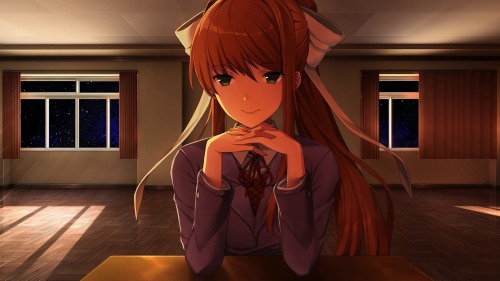
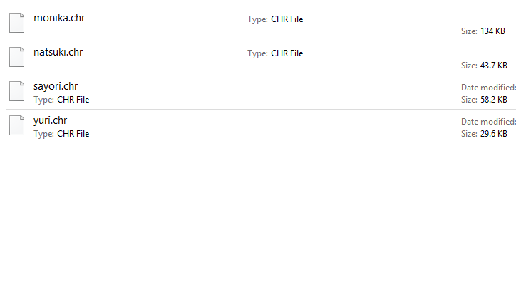

DDLC (Doki Doki Literature Club) is a visual novel game that consists of 4 acts and is created by Team Salvato, which is lead by Dan Salvato
The game consists of 5 main characters:
Monika
Yuri
Sayori
Natsuki
And the Player
Monika is the club president of the literature club, she has green eyes and long brown hair. She is noted by the other characters to be the most smart, beautiful, confident, and athletic girl in the school.
Yuri is a member of the literature club, she has purple eyes and long purple hair. She is shy, generous, polite, and often mature. Even though she is mature, she often argues with Natsuki.
Natsuki is a member of the literature club, she has pink eyes and short pink hair. She is a brash, blunt, and arrogant. She often acts rude to the other members but she really cares about her friends.
Sayori is vice president of the literature club, she has blue eyes and short peach hair. She is often happy and cheerful, she is generally clumsy and usually the one to break up arguements.
The player is a male that can have a custom name. The player is often reffered to as "dense" by the community
Gameplay and Story
The game starts off disguising itself as an innocent Visual Novel game. The innocent art style and soundtracks of this game really tricks a lot of people thinking this is an innocent game.
The game begins with the player's childhood friend, Sayori catching up to them and going to school together
Sayori then asks the player to join the Literature Club, which the player feels hesitant to join. The player ends up joing the Literature Club and it introduced to the other 3 girls.
Throughout the game the player has options to choose a certain character route
Sayori Route
Natsuki Route
Yuri Route
You can choose a character route by choosing words in your poem that appeal to that character as shown below.
As you progress through the game, everything seems normal until Sayori starts acting weird. She starts missing school more often and if she does go to school, she leaves early.
It is revealed that Sayori has depression,despite being happy all the time. After comforting Sayori, the day tomorrow she was deleted by Monika
This is the point where the player enters act 2. This is when the game starts to show it's true self, a psychological horror game.
In this act many odd occurences happen. Sayori is completely absent from this game. Even in the main menu she is not present, she appears as a jumbled mess of the other members of the club. Jumpscares can happen and secret poems can be randomly unlocked which contain very creepy messages. In this act it is also shown visually that Monika is messing with the code by causing characters to say "Just Monika"
Even the music becomes distorted and eerie
Towards the end of act 2, it is revealed that Yuri is dead and then Monika deletes both Natsuki and Yuri. At this point it is fully clear that Monika is self aware.
Once Yuri and Natsuki are deleted you enter act 3. The player and Monika are inside the classroom floating in space. The player cannot talk back to Monika because she has broken the script.

At this point the player only has one option to progress the game.
Delete Monika
To do this, the player has to go into the local game files and delete Monika's character file. Another thing to notice is that none of the other characters' files are there meaning this game deletes files in real time.

Monika is very surprised by this action and is very angry. Although she ends up forgiving the player because she loves the player too much. This leads to Monika restoring the game to its normal state however, Monika is not present.
Everything seems normal until the point that Sayori thanks you for getting rid of Monika. This leads to Sayori wanting to trap the player in the classroom as Monika did.
Monika intervines by deleting Sayori and all of the characters. She deletes the entire game. The game ends with credits showing all of the CG that could have been unlocked.
During the credits Monika is singing "Your Reality" a song which she made.
After the credits end you are met with this note left by Monika. If the player tries to restart the game, the note is still there. The only way to completely restart this game is to delete the firstrun file or to completely reinstall the game
Conclusion
Personally I think this was my favorite game of 2017. Everything was brilliantly done, the music, the art, and the plot greatly impressed me. This game easily earns a 10/10 from me.
More information about this game can be found
Here .

.png)
.png)
.png)
.png)
.png)
.png)

.png)